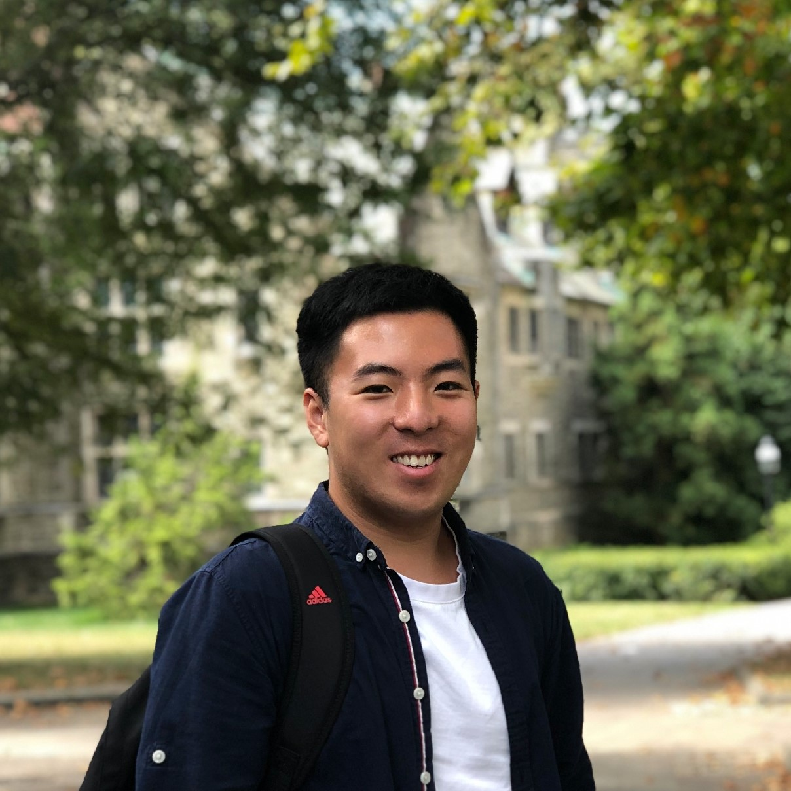
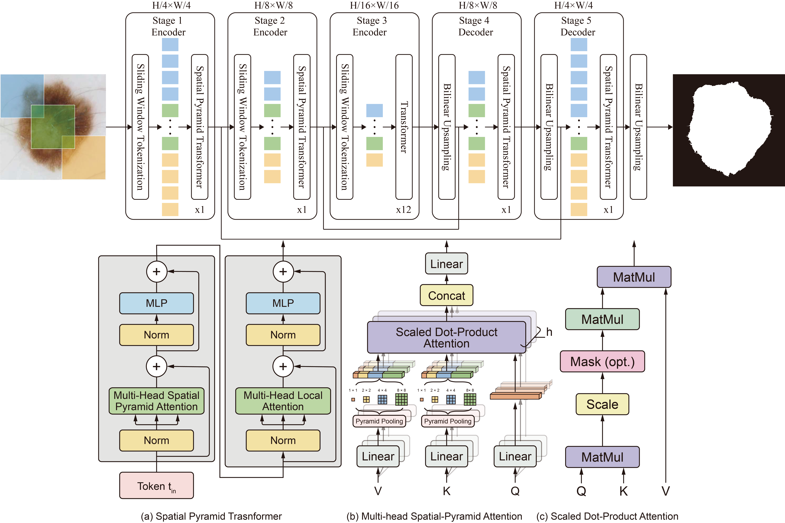

Research Interests:
- Neuroimaging
- Functional Brain Connectivity
- Machine Learning
- Medical Image Analysis
I received my M.S. of BME from Columbia University this Spring. During my study at Columbia, I focused on medical image analysis based on machine learning and deep learning in Prof. Andrew Laine's group.
I gained my bachelor's from Northeastern University (Shenyang, China) with a major of Biomedical Engineering in 2019. During my undergraduate study, I worked with Dr. Yueyang Teng on construction and analysis of functional brain connectivity based on machine learning and deep learning methods.
Projects
Unravel Developing Infant Brain Network Patterns with Deep LearningColumbia University; Advisor: Prof. Andrew Laine & Dr. Yun Wang; Oct. 2020 - Feb. 2021
|
{kind=link}

|
Predicting Working Memory Performance Based on Resting State fMRI DataNeuromatch Academy; Advisor: Dr. Jeff Yau; Jul. 2020
|
Intrapulmonary Lumen-wall Separation through DE-CT and Deep LearningColumbia University; Advisor: Dr. Andrew Laine; Apr. 2020 - Sep. 2020
|
{kind=link}
Construction and Analysis of Functional Brain Network Based on Network SimilarityNortheastern University; Advisor: Dr. Yueyang Teng; Mar. 2018 - Apr. 2019
|
{kind=link}
Publications
|  |
Fully Transformer Network for Skin Lesion Analysis |
{kind=link}

|
Recursive Refinement Network for Deformable Lung Registration between Exhale and Inhale CT Scans |
Education
Columbia University in the City of New York
Sep. 2019 - Feb. 2021M.S. in Biomedical Engineering
Northeastern University
Sep. 2015 - Jun. 2019B.Eng. in Biomedical Engineering
Work Experience
Software Engineering Intern Jul. 2018 - Aug. 2018
Software Engineering Intern Jul. 2017 - Aug. 2017